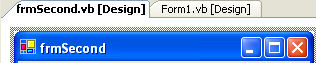

Creating Multiple Forms in VB .NET
It's a rare programme that only has one form in it. Most programmes will have other forms. These other forms can be used for things like Find and Replace searches, extra formatting capabilities, to set Options for the programme, and a whole lot more besides. VB.NET let's you add as many forms as you want to your project. But the process is not quite so simple. We'll see how to do it, though.
You can use the form you already have for this, the one with the ToolStrip on it (or start a new project, if you prefer). But from the VB.NET design environment, click the Project menu. From the drop down menu, click Add Windows Form. The Add New Item dialogue box appears.
Select Windows Form under Templates. Then click inside the Name textbox
at the bottom. Change the Name of the form to frmSecond.vb. Then click
Add.
When you are returned to the design environment, your new form will be displayed:

To switch between forms, you can click the tabs. In the image, two tabs are displayed: Form1 (the original and first form), and our new form frmSecond.
We'll write code to get this new form to display. But it will only appear when a button is clicked on Form1.
So click the tab for Form1, and add a button to this form. Change the Name property of the button to btnShowSecond. Then double click the button to access the code for it.
In order to display the second form, you have to bear in mind that Forms are Classes. So frmSecond is a Class (as is Form1). You first have to create a new object from the class called frmSecond Class. Then call its Show method.
So add this code to your button
Dim SecondForm As New frmSecond
SecondForm.Show()
The first line sets up a variable called SecondForm. When you type "As New", you're asking VB.NET to create a New object. If you type a space, you'll see a pop up list. Type the frm of frmSecond and you should see it displayed on the list. You can double click the item in the list to add it to your code. But what the line does is create a new Object from the Class called frmSecond.
Once we have the Form Object stored in the variable, we can just use the Show method to display the form.
Run your programme and test it out. When you click your button, you should see the second form appear.
However, there's a problem with this code. Click the button again and another copy of frmSecond appears. Keep clicking the button and your screen will be filled with the second form!
To prevent this from happening, you can move the code that creates the form object. Move it right to the top of the coding window, just below Public Class Form1.
The only code left in the button is the line that Shows the form. A new form object will now not be created every time the button is clicked. If you try it out, you should see only one form appear when the button is clicked, and not multiple forms.
In the next part, we'll take a look at Modal and Non Modal forms.